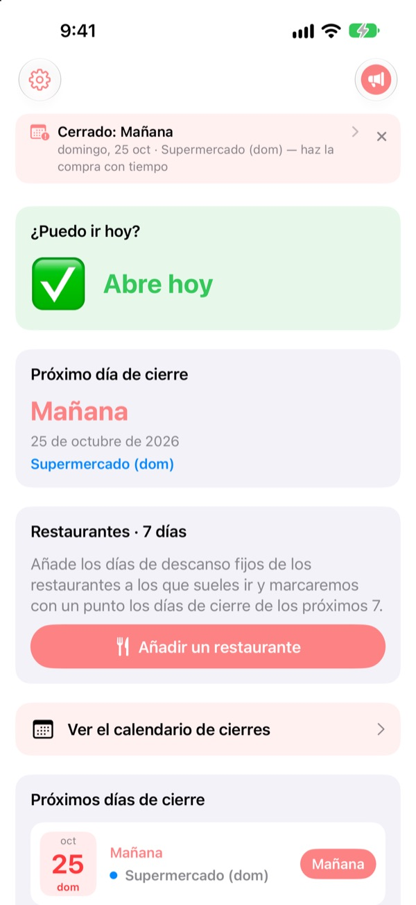
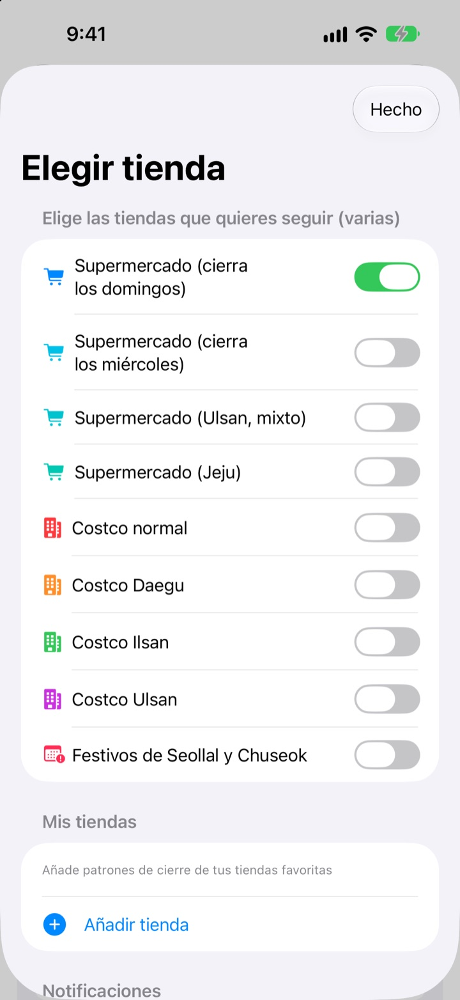
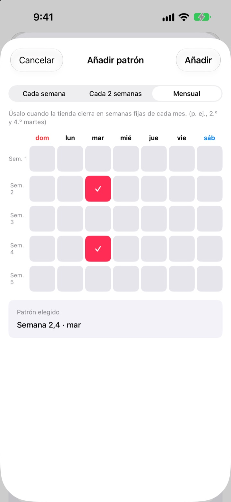
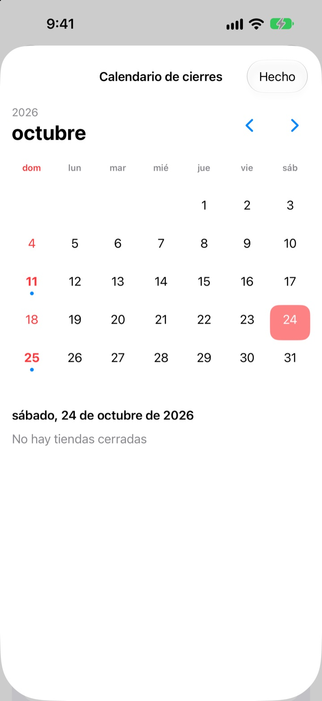
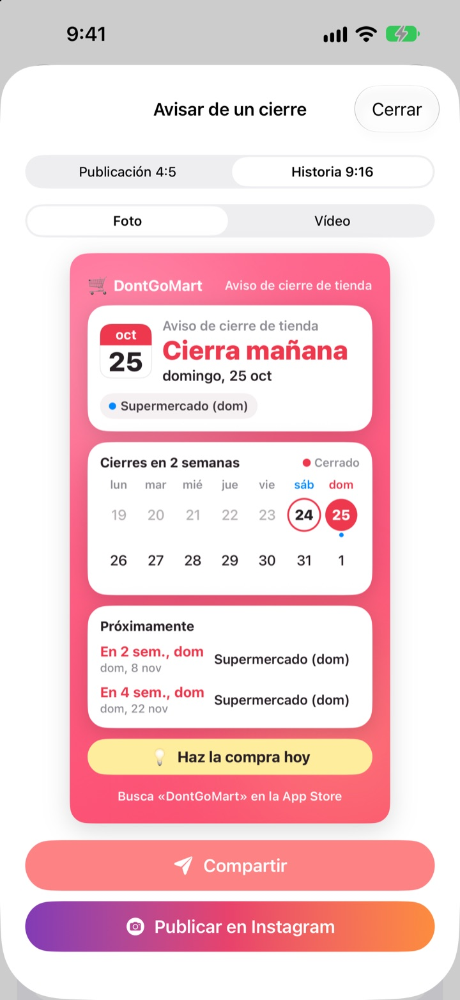

Antes de ir a comprar,
comprueba que esté abierto
Al abrir la app, lo primero que ves es si tus tiendas abren hoy. Te avisa antes de cada día de cierre para que no vuelvas a encontrarte la puerta cerrada.
Todas las funciones son gratis. Sin cuenta ni anuncios.

Pruébalo con tu tienda
Elige una tienda y verás al momento si abre hoy y cuándo cierra la próxima vez. Usa las mismas reglas que la app.
¿Alguna vez has llegado con la lista de la compra y estaba cerrado?
En Corea los hipermercados deben cerrar dos días al mes, pero cuáles depende de dónde estés. La mayoría cierra el segundo y el cuarto domingo, otros los miércoles, y Ulsan y Jeju tienen sus propias reglas. En Costco cambia según el local. DontGoMart calcula los cierres de tus tiendas y te dice lo primero si puedes ir hoy.
Acierta en cada región
Elige tiendas que cierran en domingo o en miércoles, o regiones con calendario propio como Ulsan y Jeju. Los almacenes normales de Costco y los de Daegu, Ilsan y Ulsan se configuran por separado.
También aparecen los cierres del día de Seollal y Chuseok, y puedes seguir varias tiendas a la vez.

Tu tienda del barrio y tus restaurantes de siempre
Si una tienda no está en la lista, añádela tú: cada semana, cada dos semanas o qué semanas del mes y qué día cierra.
Para un restaurante, pega un enlace compartido desde Naver Map o elige una captura de su ficha, y los días de descanso se rellenan solos. El texto de las fotos se lee solo en tu dispositivo.

Avisos y widgets para no olvidarte
Recibe un aviso 1, 2, 3 o 7 días antes a la hora que elijas, y otro la víspera recordándote que hoy es buen día para comprar.
Los widgets de la pantalla de inicio y la pantalla bloqueada muestran el próximo cierre, si abre este domingo y los próximos siete días de tus restaurantes. El calendario enseña un mes entero de cierres.

Compártelo en una sola tarjeta
Convierte el aviso en una tarjeta con un calendario de dos semanas y un consejo de compra, y mándalo al chat familiar. Hay tamaños para publicación e historia de Instagram, y también vídeo corto.

Empezar lleva tres pasos
- 1
Elige tus tiendas
Activa las tiendas y regiones donde compras. Las que quieras.
- 2
Activa los avisos
Elige con cuántos días de antelación y a qué hora.
- 3
Añade un widget
Consúltalo en la pantalla de inicio o bloqueada sin abrir la app.
Reglas de cierre por tienda
- Supermercado (cierra los domingos)
- 2.º y 4.º domingo · casi todas las regiones
- Supermercado (cierra los miércoles)
- 2.º y 4.º miércoles · parte de Gyeonggi, Cheongju
- Supermercado (Ulsan)
- 2.º miércoles, 4.º domingo
- Supermercado (Jeju)
- 2.º viernes, 4.º sábado
- Costco normal
- 2.º y 4.º domingo
- Costco Daegu
- 2.º y 4.º lunes · Daegu, Daegu Innovation
- Costco Ilsan
- 2.º y 4.º miércoles
- Costco Ulsan
- 2.º miércoles, 4.º domingo
- Seollal, Chuseok
- cierre el mismo día
Los cierres obligatorios los fijan los gobiernos locales y pueden cambiar. Si algo no cuadra, escríbenos a la dirección de abajo.
Preguntas frecuentes
Los días de cierre no coinciden con la realidad.
Los cierres obligatorios dependen de ordenanzas locales y varían por región. Comprueba en Ajustes que elegiste el tipo de tienda correcto (cierre en domingo, en miércoles, Ulsan, Jeju, etc.). Si aun así no coincide, envíanos el nombre de la tienda y la zona y lo revisaremos.
Mi tienda no está en la lista.
Añádela como tienda propia. Elige cada semana, cada dos semanas o qué semanas del mes y qué día cierra, por ejemplo el segundo y el cuarto domingo.
Los días libres de un restaurante no se rellenaron bien.
Al importar desde un enlace de Naver Map, la ficha del restaurante debe indicar sus días de descanso. Con una captura, asegúrate de que el aviso de cierre se vea en pantalla. Puedes corregir lo rellenado antes de guardar.
No me llegan los avisos.
Comprueba que las notificaciones estén permitidas en Ajustes > Notificaciones > DontGoMart y que los avisos de cierre estén activados dentro de la app.
El widget no se actualiza.
Abrir la app una vez actualiza los widgets. Si sigue igual, quita el widget y vuelve a añadirlo.
¿Qué son las propinas?
Todas las funciones de DontGoMart son gratis. Las propinas de café, tarta y comida sirven para apoyar al desarrollador. Después verás un agradecimiento y una insignia con las veces que has dado propina.
¿Dónde pregunto por pagos o reembolsos?
Apple gestiona las compras dentro de la app, así que los reembolsos se piden en reportaproblem.apple.com. Para todo lo demás, escríbenos.
¿Cómo se tratan mis datos?
No hay cuentas, anuncios ni herramientas de rastreo, y el texto de las capturas se lee solo en tu dispositivo. Consulta la política de privacidad más abajo.
¿Dudas o ideas? Escríbenos a hyunho.lee.1993@gmail.com. Solemos responder en uno o dos días.